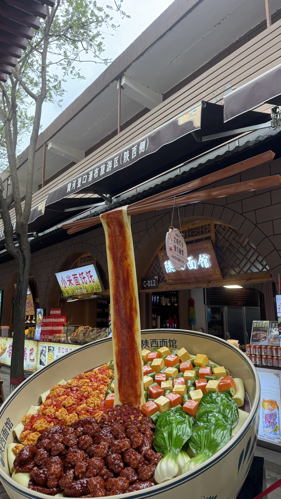

旅程概览
四大目的地

内蒙古 · 贺兰山
贺兰山，蒙古语意为"骏马"，是中国西北地区的重要山脉，也是内蒙古与宁夏的天然分界。这里不仅有壮丽的戈壁风光，还有珍贵的岩画遗迹，记录着远古人类的生活印记。
海拔2513米的主峰下，牛群在碎石路上悠闲漫步，双峰骆驼穿越公路，展现出一幅原始而苍凉的西北画卷。
了解更多 →
陕西 · 壶口瀑布
壶口瀑布，位于黄河中游秦晋大峡谷，是世界最大的黄色瀑布。黄河奔流至此，从300余米宽的河面骤然压缩至50余米，从20多米高的陡崖上倾泻而下——"千里黄河一壶收"。
瀑布激起的水雾腾空而起，涛声如万鼓齐鸣、千军万马，站在岸边感受黄河母亲河最深沉的脉动，震撼心灵。陕西宜川侧正面观赏，盛夏汛期尤显磅礴。
了解更多 →
陕西 · 宝塔山
宝塔山，延安的标志性建筑，中国革命的精神象征。始建于唐代的宝塔，见证了抗日战争和解放战争的峥嵘岁月，"几回回梦里回延安，双手搂定宝塔山"。
山上还有陕北窑洞展览、毛主席复电石碑等，展现了延安深厚的红色文化和黄土高原的民居智慧。
了解更多 →
宁夏 · 西夏陵
西夏陵，位于宁夏银川市西郊贺兰山东麓，是西夏王朝（1038-1227）的皇家陵园，被誉为"东方金字塔"。这里埋葬着西夏九位帝王，是中国现存规模最大、地面遗址最完整的帝王陵园之一。
西夏，一个由党项族建立的神秘王朝，创制了自己的文字，融合了汉、藏、回鹘等多元文化，在丝绸之路上绽放出独特的文明之光。
深入了解 →